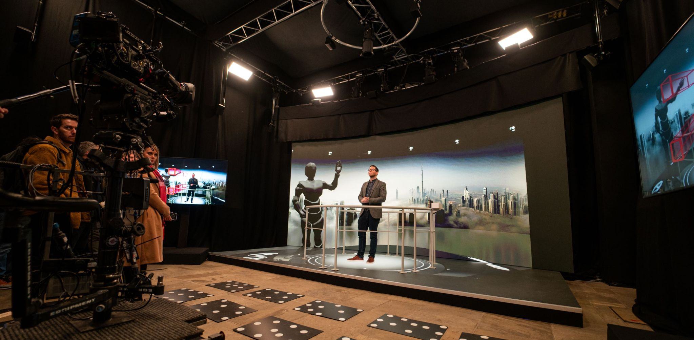

Hello, and welcome to my website. It's not the flashiest, but this is a place where I
keep examples and demonstrations of my previous and current work.
I love combining various pieces of technology to make new ideas, experiences and things.
My interests centre around music, audio, visual arts and technology, and how they can
be combined.
On the audio side of things - I've worked in Live Sound, Sound Recording, Sound Engineering and play Bass guitar, Synthesisers and Keyboards. I also repair and modify audio equipment and can make custom electronics.
On the techy/programming/visual side of things I've worked in Web Development (CSS, Java, HTML), Game Engines (Unity, C#, Unreal, C++), Animation (Blender, TouchDesigner, Notch) 3D Modelling (Blender, 3DS Max, Sketchup), Audio-Visual Design and Audio Programming (C++, MaxMSP).
I have worked with technologies including Projection Mapping, Ultra-Wide-Band, Motion Capture, BLE Beacons, RFID, IR Sensors, Virtual-Reality, Augmented Reality, Depth,-Sensing Cameras,
Raspberry Pi, Arduino, Bela Platform, Analogue Electronics, Android, iOS, PC and Mac.
I am also an experienced AV engineer, with a solid understanding of networking, audio, video, lighting and power systems. I have designed systems for large scale events, museums, theatres, offices and corporate auditoriums.
I am always open to conversations and collaborations, so please feel free to get in touch at: projectsinsound@gmail.com
Please take a look at my work.
Thanks,
Graham.
All Things Programming
Adidas Crazyfast Event
Interactive, IR Sensors, RFID, Lighting, Sound
Working for Pixel Artworks, I was the Technology Lead and System Designer for this brand activation for the New Adidas football boots.
Competitors were given a pair of boots and told to compete in three challenges: a sprint, a dribbling challenge and a reaction test.
Visitors were tracked through the space using RFID wristbands, and the challenges were timed using Terrabee Evo sensors.
>
Fanta Bricking It Lane
Interactive, Projection Mapping
Working for Pixel Artworks, I was the System Designer for this projection mapping experience on Brick Lane, London. With content mapped to a mural painted on the wall, a hidden
operator was able to trigger jump scare moments for passers by.
>
VR Theatre Design
Oculus Rift, Virtual Reality, CAD, 3D Modelling, Architecture
This work was done to highlight the prospective designs of theatres
to clients, whilst I was working for a theatre design consultancy.
For this work I used Autodesk 3DS Max to bring architectural
drawings from AutoCAD and Sketchup into Unity, in order to assess
the sight lines from every seat in the house, before a brick had
been layed. Please contact me if you would like more details or
information. Unfortunately the frame rate has been greatly reduced by the screen recorder I used.
This project was a creative project led by the Intsitute of Digital Fashion, comissioned by The Barbican for the Our Time on Earth Exhbition.
I was responsible for sound design, composition, show control, motion capture integration and some of the visual elements. In collaboration with visual artists Cattytay, Neal Coghlan and Hanzo Schwarz.
Dazzle - Gibson Martelli
Unreal, Optitrack, Live Link, DMX, Pixel Streaming, Motion Caoture, Real time, Interactive
On this project I was lucky to work with the incredible Ruth and Bruno who make up Gibson Martelli.
Through the use of pixel streaming, live link, web sockets, backpack PCs, Vive VR headsets and art-net lighting protocol we
were able to produce a piece of work that could be enjoyed both in physical, augmented and virtual reality.
Virtual Production and Motion Capture
Unreal, Animation, Lighting and Motion Capture
This is a test shoot that I worked on for target3D with Virtual Production specialists Final Pixel. Using motion capture, we created live interaction between the real and unreal worlds.
As Technology Solutions Engineer I was responsible for the motion capture, lighting and audio systems for the project.
This involved sending Motion Capture data into Unreal via LiveLink, as well as lighting control data via ArtNet.
Gesture Controlled Virtual Production
Unreal, TouchDesigner, Show Control, Motion Capture and Spatial Audio
This project involoved implementing gesture control for a presenter on a virtual production stage.
I used TouchDesigner to send positional data of the presenter's hands to Unreal via OSC messages, and wrote blueprints to trigger events based on this information.
I also implemented communication with QLab and d+b Soundscape with Unreal.

Birdsongs
Simulating Ecosystems, Emergent Behaviours and Generative Music
This project implements the behaviours of an ecosystem into the
Unity game engine. Through interacting with and cultivating the
environment, the player creates emergent behaviours that determine
the music generated by the system.
Solar System Experiments
Simulating Planetary Movement, Generative Sound
Here are some examples of some of my recent experiements using TouchDesigner to replicate the movements of the planets of our solar system.
I built a max for live device that recieves information from TouchDesigner to Abkleton in order to create generative sound in real time.
The audio itself is created using VCV rack, a software absed modular synthesis system.
The movememt of the planets is sumlated using the python library "solar system".
3D Soundcapes
Position Tracking, Ultra Wideband and Spatial Audio
Real-time position tracking of people in a space is achieved by
using Ultra Wideband Technology with the Decawave DWM-1001
Development Boards. These boards output x, y, z co-ordinates to a
raspberry pi, which acts as a server, and sends positional updates
over wi-fi to an android smartphone, using MQTT messaging protocol.
These positional updates are used within a Unity app on the
smartphone to deliver a position-based spatial audio experience to
the listener. This technology could be used for audio guides, sonic
treasure hunts, immersive theatre or interactive musical
performance. I plan to continue the development of this technology
in order for a position-tracked audience to directly manipulate
soundscapes as they move around a space.
Web Development
Adobe Illustrator, Javascript, CSS, HTML
This is a screen recording showing screenshots of one of four websites I built for a music exhibition. These were built to be run on a touch screen inside of a
music museum to allow visitors to learn about different aspects of music. This specific one shows visitors examples of a range of instruments from several families.
Working with a graphic designer, I took their designs from Adobe Illustrator and implemented them in HTML and CSS.
Projection Mapped Keyboard
Projection Mapping, 3D Modelling
A very rough, and unfortuately terribly recorded, demo of a MIDI controlled, projection-mapped keyboard.
Audio Reactive Tree
Audio Reactive Animation, Lindemayer Systems
This is a recording of an animation I created in TouchDeisgner using a lindemayer system.
The values of the coefficients in the algorithm are manipulated by over time by parameters extracted from the pre-recorded music which I created.
Audio Reactive Particle Systems with Mocap
Audio Reactive, Particle Systems, Mocap.
Very early (first) results of playing around with Unreal's particle systems and Mocap data.
Noitom Mocap suit into Unreal Engine 4 via Live Link. Niagara particle effects in UE4. Audio analysis and beat detection in Ableton Live into Touchdesigner.
OSC commands from TouchDesigner into Unreal Engine 4.
Birdsongs 3D Update
3D Modelling, FBX, UV-Wrapping, Animation, Blender
I'm planning on turning Birdsongs into a 3D game, and have been working on making some low-poly 3D assets for the game.
I'll be honest, I did get a bit distracted animating my player character to do a silly dance, but here's a little teaser of some of my progress.
Birdsongs Audio Update
Unity, OSC, Ableton, Max for Live
Early demonstration of migrating all sound generation from Unity into Ableton Live.
Events in Unity now send OSC messages to Max for Live devices that can create and delete notes from Ableton clips, as well as sequence paramters.
This is the results from a short experiment into projection mapping objects using photogrammetry.
AV Design
Theatre Spaces
Whilst working for Charcoalblue, I consulted on, designed and comissioned audio-viusal systems
for theatres, muic venues, museums and exhibitions. Projects included: The
Factory Theatre, Manchester; LAMDA, London; Story House, Chester; Theatre Royal Drury Lane, London; The Bristol Beacon, Bristol; The Royal Opera House, Muscat, Oman.
Events
Whilst working for Pixel Artworks I have designed, installd and commissioned AV systems for projection mapping on the Burj Al Arab, as well as the new interactive showroom: "The Lighthouse".
I was also Senior Audio Technician for The UK leg of the "Stranger Things: The Immersive Experience" Tour.
Offices
I have consulted on office AV for large companies including Google and Burberry.
Cinemas
Whilst working for Harman Professional, I developed a software tool
to speed up the process of specifying JBL loudspeakers and Crown
amplifiers for cinema auditoriums.
All Things Audio
Compositon
I have composed sound for iOS and Oculus Quest applications, as well as in solo and collaborative music projects
Sound Design/Soundscapes/Soundbeds
These are two soundscape compositions I made for the soundbeds of a stargazing application
Modular birds and rainforest soundcape
Drone 1
Drone 2 - Eerie Soundbed
Real Music
Hip Hop
This is a demo of a composition I made for a small hip-hop/jazz band.
This is a composition I made inspired by African drumming patterns, Mongolian throat singing and Indian tabla drumming.
Film Dub
Horns Excerpt
Minimal
Electronic Odds and Ends
Bass and Prophet
Modular Excerpt
More Modular Excerpt
Recording/Mixing/Editing
Hese are some songs of friends' bands that I recorded, edited and mixed.
Live Sound
I have worked in live sound and have mixed front of house and monitors at events such as In The Woods Festival, The Boilerroom Guildford and Shetland Folk Festival.
Analogue Electronics
Mixing Desk Restoration
I am in the process of restoring an old analogue mixing desk from 1984. I bought it very cheap on eBay as it didn't come with a power supply.
I have built my own small power supply which has allowed me to start restoring each module of the mixing desk one at a time.
Once I have restored all functionality to each of the individual modules I will reassemble the desk and build a power supply with high enough current to power the whole desk.
Here is a short video of me testing the functionality of one of the input channel strips.
Modular Synth Construction
After finding an old hobbyist electronics type book in a charity shop, I decided to start building my own modular synthesiser.
So far I have built an oscillator, a VCA, an ADSR and a VCF. The Synthesiser can be controlled by MIDI, using a Bela computer, which is a Raspberry Pi like device with an audio focus.
I have written a script in C++ that takes in MIDI messages to Bela via the USB port and emits analogue control voltages which are sent to the synthesiser.
Video to come soon.
Custom User Interfaces
I have a Dave Smith Instruments Prophet Rev2, which is a really fun digitally controlled analogue synthesiser.
Its really fun to mess around with the gated sequencer in the sysnthesiser, but its quite fiddly using the synthesiser's user interface.
I decided to make a patch in Max MSP that would control the parameters of the synthesiser in a much more intuitive manner.
My next step for this project is to try and build this interface in hardware, using arduinos to convert analogue signals from the interface into digital messages.
Software Instruments and Effects
I am currently programming my own software synthesiser that will run natively in Unity allowing for greater implementation of generative sound.
About This Synth
I built this synthesiser using the WebAudioAPI. Press a keyboard
button or use the keys A to L on your keyboard to play notes.